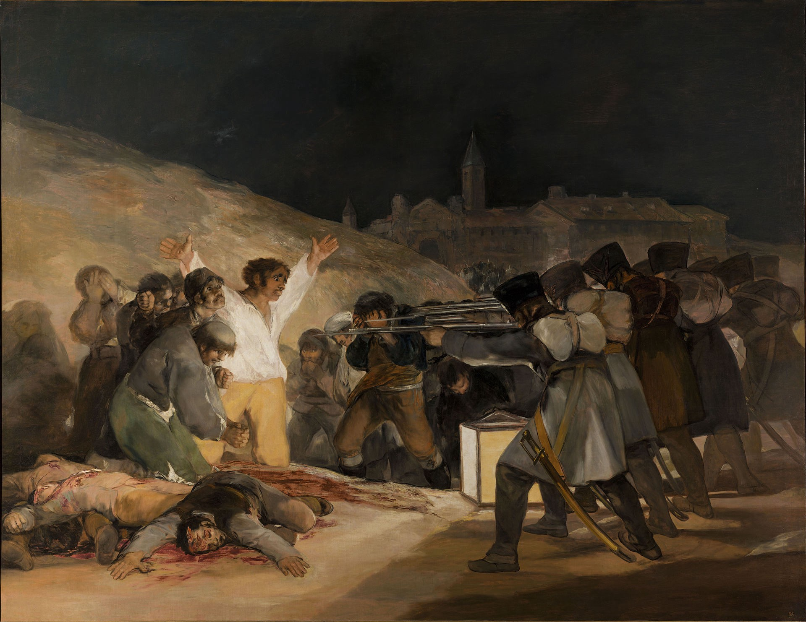

Франсиско Гойя
Франсиско Хосе де Гойя-и-Лусьентес— испанский художник и гравёр, один из первых и наиболее ярких мастеров изобразительного искусства эпохи романтизма.
Рождение и молодость в Испании
Франсиско Гойя Лусьентес родился в 1746 году в Сарагосе, столице Арагона, в семье среднего достатка. Его отец — Хосе Гойя. Мать — Грасиа Лусьентес, дочь бедного арагонского идальго. Через несколько месяцев после рождения Франсиско семья переехала в деревеньку Фуендетодос, находившуюся в 40 км к югу от Сарагосы, где они и прожили до 1749 года, покуда ремонтировался их городской дом. Франсиско был младшим из трёх братьев: Камилло, старший, стал впоследствии священником. Cредний, Томас, пошёл по стопам отца. Хосе Гойя был известным мастером по золочению, которому даже каноники собора Базилика-де-Нуэстра-Сеньора-дель-Пилар поручают проверку качества позолоты всех изваяний, над которыми тогда трудились арагонские мастера, реконструировавшие собор. Образование все братья получили довольно поверхностное, Франсиско Гойя всегда будет писать с ошибками. В Сарагосе юный Франсиско был отдан в мастерскую художника Лусана-и-Мартинеса. В конце 1763 года Франсиско принимает участие в конкурсе на лучшую живописную копию гипсового Силена, но 15 января 1764 года за него не подали ни одного голоса. Гойя ненавидит слепки, он признается в этом намного позже. В 1766 году Гойя попадает в Мадрид и здесь его ждёт новый провал на конкурсе в Академии Сан-Фернандо. Сюжеты для конкурсных работ связаны с великодушием короля Альфонсо X Мудрого и подвигами национальных героев-воинов XVI века. Эти сюжеты не вдохновляют Гойю. Ко всему прочему, Франсиско Байеу, другой молодой живописец из Сарагосы и член жюри конкурса, является сторонником взвешенных форм и академической живописи, не признающим фантазии молодого Гойи. Первую же премию получает младший брат Байеу, 20-летний Рамон… В Мадриде Гойя знакомится с работами придворных художников, совершенствует своё мастерство.
Путешествие в Италию
Между июлем 1766 года и апрелем 1771 года жизнь Франсиско в Риме остается загадкой. Согласно статье русского искусствоведа А. И. Сомова, в Италии художник «занимался не столько живописными работами и копированием итальянских мастеров, сколько наглядным изучением их средств и манеры». Весной 1771 года он участвует в конкурсе Пармской академии на картину по античной теме, называя себя римлянином и учеником Байеу. Правящим принцем Пармы в то время являлся Филипп Бурбон-Парм, брат испанского короля Карла III. 27 июня единственная премия присвоена Паоло Борони за «тонкий изящный колорит», тогда как Гойю упрекают за «резкие тона», зато признаётся «грандиозный характер выписанной им фигуры Ганнибала». Он удостаивается второй премии Пармской Академии художеств, получив 6 голосов.
Возвращение и работа в Сарагосе
Капитул церкви дель-Пилар обращает внимание на молодого художника, возможно из-за его пребывания в Риме, и Гойя возвращается в Сарагосу. Ему предложено выполнить эскизы для плафона капеллы архитектора Вентуры Родригеса на тему «Поклонение имени Бога». В начале ноября 1771 года капитул одобряет предложенную Гойей пробную фреску и поручает ему заказ. Тем более, что новичок Гойя согласен на сумму 15 000 реалов, в то время как более опытный Антонио Гонсалес Веласкес запрашивает 25 000 реалов за ту же работу. 1 июля 1772 года Гойя заканчивает роспись, его работа вызывает у капитула восхищение ещё на стадии представления эскиза. В результате Гойя приглашён расписать ораторий дворца Собрадиэль, ему также стал покровительствовать знатный арагонец Рамон Пиньятелли, чей портрет он напишет в 1791 году. Благодаря Мануэлю Байеу, Франсиско приглашается в картезианский монастырь Аула Деи, вблизи Сарагосы, где он в течение двух лет создаёт 11 больших композиций на темы из жизни Св. Девы Марии. Из которых сохранились только семь, и те испорчены реставрационными работами. Франсиско Байеу познакомил Гойю со своей сестрой Хосефой, от которой тот был в восторге и вскоре соблазнил её. В июле 1773 году Гойе пришлось жениться на ней, когда она была на пятом месяце беременности. Свадьба состоялась в Мадриде. Ему в это время — 27, а Хосефе — 26 лет. Свою жену Франсиско называет «Пепой». Через четыре месяца родился мальчик, которого назвали Эусебио, он прожил недолго и вскоре умер. Всего Хосефа родила пять детей, из которых выжил лишь один мальчик по имени Хавьер — Франсиско Хавьер Педро — который стал художником. Как только Гойе стали доступны встречи с придворными аристократками, Хосефа была тут же им практически забыта. Хотя Гойя оставался с ней в браке вплоть до её смерти в 1812 году. Гойя написал только один её портрет.
Гойя в Мадриде
В 1775 году Гойя окончательно обосновался в Мадриде у своего шурина Франсиско Байеу, и работал у него в мастерской. Байеу был тогда официальным придворным художником короля Карла III. Первым придворным заказом Гойи в 1775 году становятся картоны для серии шпалер для столовой принца Астурийского, в будущем Карла IV, во дворце Эскориал. В них представлены охотничьи сцены, охотой же увлекается и сам Гойя. Франсиско создаёт 5 композиций и получает за них 8 000 реалов. Для Королевской шпалерной мануфактуры в 1776—1778 годах Гойя выполняет следующую серию панно для столовой принца Астурийского уже во дворце Пардо, среди них выделяются «Танец на берегу Мансанареса», «Драка в харчевне», «Маха и маски», «Запуск змея» и «Зонтик». В 1778 году Франсиско получает разрешение на гравирование картин Диего Веласкеса, перевезённых только что в Королевский дворец в Мадриде. В течение двух лет Гойя создаёт 7 картонов для шпалер в опочивальню принца и его жены и 13 — в их гостиные. Среди этих работ выделяются «Прачки», «Продавец посуды», «Врач» или «Мяч». Тема испанской народной жизни считается совершенно новой и импонирует заказчикам. В том числе мода на такую тематику способствует дебюту Гойе при дворе: в начале 1779 года он не без успеха представляет королю 4 свои картины. Через некоторое время Гойя уже просит место придворного художника, но ему отказывают. Его не поддерживает его шурин Франсиско Байеу, не желающий делить с ним место первого живописца короля. Сам же Гойя к тому времени создал себе капитал в 100 000 реалов. В мае 1780 года из-за приостановки изготовления шпалер на королевской мануфактуре освободившийся Гойя заключает контракт на роспись купола собора дель Пилар за 60 000 реалов. Работает Гойя быстро и под руководством Байеу. Между двумя художниками возникает конфликт, в который втянут и капитул собора: Гойя отказывается вносить требуемые своим руководителем поправки в работу. В результате он всё же их вносит, но из-за этой обиды на шурина и арагонское духовенство долгое время не будет появляться в родной Сарагосе. В июле 1781 года Гойя наряду с Франсиско Байеу и Маэллой. работает по украшению церкви св. Франциска Великого в Мадриде. Он пишет «Проповедь св. Бернардина Сиенского в присутствии Арагонского короля». После мессы в присутствии короля Гойя принял поздравления. На этой работе Гойя изобразил себя с сияющим лицом слева от святого, это изображение он повторил и в последующем автопортрете. Гойя всё чаще писал портреты, так в январе 1783 года ему заказывают портрет графа Флоридабланки.
Болезнь и творчество в 1793—1799 годы
Из писем Гойи известно, что в начале 1793 года он был тяжело болен. В это время Гойя нашёл приют в Кадисе у местного торговца и коллекционера Себастьена Мартинеса, чей портрет он создал. Гойю разбил паралич, но точно диагностировать болезнь художника сейчас не удаётся. В любом случае, неизлечимая глухота Гойи стала следствием перенесённого недуга. Летом того же года он возвратился в Мадрид и тут же послал Бернардо де Ириарте, вице-попечителю Академии Сан-Фернандо, серию станковых картин на медных пластинах на народную тематику. Из-за войны с Францией Гойя получил заказ на портреты видных командиров испанской армии: Антонио Рикардоса и лейтенант-генерала Феликса Колона де Ларреатега, а также родственника Ховельяноса, Рамона Посадо-и-Сото. Также в 1794 году он написал портрет знакомой актрисы Марии Росарио дель Фернандес, по прозвищу «Ла Тирана». Сославшись на тяжёлую болезнь, Гойя отказал директору королевской мануфактуры на эскизы для шпалер. В 1795 году Гойя создал портрет герцога Альбы, а затем и его жены — в полный рост. Историю о взаимной страсти Гойи и герцогини Альбы прямо не подтверждает ни один из дошедших до нас документов. В портретах Каэтаны Альбы можно найти намёки на существование связи. Позднее же в «Капричос» Гойя весьма едкими рисунками изобразил герцогиню. В небольшом полотне того же года Гойя запечатлел Альбу с её дуэньей в довольно фарсовой бытовой сцене. В июле 1795 года умирает шурин Гойи Франсиско Байеу, Гойя выставил в Академии его неоконченный портрет. Франсиско безуспешно просил Мануэля Годоя обратиться с ходатайством к королю о месте первого придворного живописца, зато он избран директором отделения живописи в Академии Сан-Фернандо с жалованием в 4 000 реалов. 4 января 1796 года Гойя отправился вместе с королевским двором в Андалусию для почтения останков святого Фердинанда Севильского. В мае Гойя пребывал в загородном дворце семьи Альба в Сан-Лукаре де Беррмеда, герцог же Альба скончался 9 июня в Севилье. Гойя вновь заболел и оказался в Кадисе, где возможно в это время создавал 3 больших полотна для оратория Санта-Куэва, новаторские в изображении жизни Христа. В это время появился Санлукарский альбом Гойи с его первыми этюдами, выполненными непосредственно на природе. В 1797 году Гойя написал «Герцогиня Альба в мантилье», где изобразил её в наряде махи с надписью на песке «Solo Goya». Весной того же года Франсиско отказался от должности директора отделения живописи в Академии Сан-Фернандо под предлогом плохого самочувствия. Тогда же Гойя приступил к серии офортов «Капричос». В 1797—1798 годах Гойе продолжали поступать заказы на портреты: Бернардо де Ириарте. и Гаспара Ховельяноса. В 1798 году Карл IV поручил Гойе расписать купол своей загородной церкви Сан Антонио де ла Флорида. В июне 1798 года Гойя вручил герцогу Осуне 6 небольших картин, сюжеты которых предвосхитили «Капричос», среди них выделяется «Большой козёл». В начале 1799 года в Академии продемонстрирована, а затем установлена в ризнице Толедского собора «Взятие Христа под стражу», где отмечено совершенное изображение ночного освещения. 6 и 19 февраля 1799 года сообщили о выходе «Капричос», их можно было приобрести в парфюмерной лавке на улице Десэнганьо,1. Но продали всего 27 комплектов из-за вмешательства инквизиции. В том же году Гойя написал портреты французского посла Фердинанда Гиймарде и его возлюбленной маркизы де Санта-Крус, урождённой Марианны Вальдштейн. Ныне оба портрета висят друг против друга в Лувре.